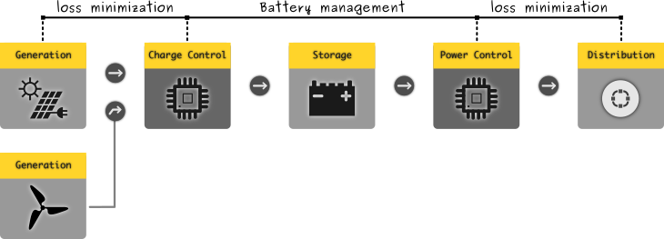

The content posted here is not a know how guide to setup a reliable power supply
system for your requirement. I might have attempted to explore and study how to
setup one, that satisfies the requirements for a communication system support structure.
All the stuff here, might change in future and represent completely my organization.
WHY ?
Communication technology available today needs electrical power to function. Thus the
devices used all have a power specification. Since our requirement is to run all day
all week all year, with very little maintenance. In particular the maintenance required
to have a pattern based on events & conditions in a temporal manner. Moreover, the overall
infrastraucture could have monitoring system that can feed the data for management.
When the power supply infrastraucture can able to serve (24 x 7 x 365) communication
requirement, then it is said that one has setup a offgrid communication infrastraucture.
Mechanism of electric power generation itself consumes lot of natural resource, no matter what
kind is the generation & distribution strategy. The renewable energy generation alternatives like
solar power, wind power, hydel power, geo-thermal power, nuclear power, all consume natural resource
to serve the scale. The effective strategy would be to break the isolation, and let people understand
the difficulties & complexity involved in power generation. Moreover, centralization is much
complex and difficult to maintain.
With decentralized structure, i.e, decentralization towards grass roots, monopoly is neutralized,
simultaneously making people really aware of the system, transparently. People mostly, like
to minize spending, and save it as profit. That is the idea of billing - a measurement
feedback. And it is one of the main reasons, when central power infrastrauctures needs to be
sold to a lot of people, to earn profit, and always keep the profit margin postive - atleast to
aid the workers, and continue maintaining the systems.
Process :
As long as electric power is available, communication can be literally sustained for years.
Availability of power supply, determines the duty cycle of the communication infrastraucture,
which in turn determines the schedule of communication operations. If communication is going
to be vital and has to operated continuously to stay connected with the peers, continuous
power supply is required. The design has to find a balance between minimizing the power loss,
and having devices that can function with less power, without ever compromising the necessary
commmunication properties.
With the growth in renewable energy adaptation, offgrid life style, available
number of devices and modules for setting up, power supply system are relatively more than
a few decades ago. Overall the system has three basic units :
Generation
Storage
Distribution

A Generic Renewable Energy based Power System
The following factors has to be considered for planning & maintenance:
Electric power budget
Size of the Generator
Generator capacity
Storage mechanism
Storage capacity
Distribution & Maintenance
Monitoring, Measurement, Analysis
Power Management
Safety Control & Fail safe backups
Cost Optimization
Loss Minimization
It is not surprising to see, that such a system, has significant overlap with the renewable
energy system built for a home. For an existing renewable energy system, one has to audit
what is the amount of energy utilized for communication. This makes the habit of measurement
and analysis normative, from which people would realize that resources for communication
do take considerable power, and such a feedback loop will make them energy conscious or even
develop a power management system that would tailor fit their requirement. I personally would
like to use a machine intelligence system that could do this for me.
Manual calculation and DIY is so much fun and teaches us a lot through practice. I have enjoyed
learning from one of my friend and peer who does power systems research. He has tried implementing
a 500W Solar system back in 2013.
The more key things is his triumph back in 2012 Part I
& Part II
in which he has written about his experiments in building his own Solar Power Plant.
Most of the stuff, modern society lives on - really depend upon massive consumption electric
power. With massive requirment, electric power generation as like other infrastrauctures
was centralized due to technical and scalability difficulties. Like how a centralized system
behaves, this resulted in a isolation between work involved in generation & consumption
of the energy. Most of the populace, tend to think, that electric power is available for them
at reasonable cost, and consider that it is available without any interruption. Even in developing
countries (with well managed electric power generation & distribution infrastraucture
with relatively less resource) - such an expectation is common.
Electricity is no more an optional utility, but an essential requirement for living in modern
societies. Even farming methods nowadays heavily depend upon electricity. Using electricity is not
a problem, but creating a synthetic dependency on the centralized electricity production
systems is the problem. Energy Saving can become more responsibile when the technology
enables electricity generation, consumption & maintenance directly to the people. This will
lessen the burdern of central infrastrauctures and increase the knowledge & awareness than the
billing strategy.
Required Modules :
Based on the power requirement, initial estimate of power - i.e, power budget has to be generated
which helps in knowing the power consumption on average. This is where power specifications of
used appliances will come into picture. Based on geography either solar power or wind power methods
can be used.
Electricity storage is vital in the self-production method. Without storage, duration of maintenance
and repair cannot be handled properly. It provides us with continuous power supply. Furthermore,
the storage technology is diversed & varies in cost based upon the chemistry used. So far, we
have used chemical storage mechanisms - a.k.a. Battery. The required battery chemistry
has to be selected based upon the load requirement, cost & maintenance.
Required Modules :
Every appliance, when equipped with such a self-generation infrastraucture, if possible, has to be
attached with its own storage mechanism. This method of localizing storage would isolate the all time
dependency on the main infrastraucture, increase reliability, ease maintenance. Storage determines
the capacity of supply. This capacity has to be >= to the generation capacity. It must also
endure the load variation. Losses between the Generation & Storage, Storage & Distribution has to be
taken into account to minimize losses.
The stored energy can be distributed to the load appliances. Most of the time, this invovles a
invertor, to convert the DC electric energy to AC electric energy. This inversion process consumes some
power for itself, & losses occur. If the appliance are operated directly in DC power standards,
then there would not be any additional requirement, apart from safety precautions. This ability
is so vital in communication devices, because they are usually vulnerable to Electromagnetic Interference
from other appliances in the power network, from external appliances, & ground loop noise.
With Battery operated devices in constant rise, more and more devices - especially communication devices
are enabled with batteries. These devices nowadays are measured in terms of communication duty cycle,
number of calls by full charge - for instance. Such unit of measurements seems to emerge. Since our focus
is on supplying power for communication appliance, some unit of measurement has to be reached to quantfy
the performance of the appliance with respect to the power it consumed to provide such performance.
Required Modules :
To consume power from the Electrical Storage Modules (Batteries), vital power electronics modules are used
to provide the required power, while protecting the storage side units from any undesirable events like
over load/short circuit.
Power Requirements of a Communication System :
The power requirments (load budget) while solely operating it alone through the renewable energy infrastructure,
will vary with the kind of technology and its associated tools, devices/instruments. Depending upon the
kind of communication infrastraucture the power supply utilization will vary. For instance the following choices
might apply :
Usage & N/W
Attribute
~ Radiating Power
Amateur Radio
Restricted license
5W
Amateur Radio
Unrestricted license
5 to 50W
Amateur Radio
Morse Code
1W
Amateur Radio
HSMM
5 to 50W
Community Radio
Short Range Internet
1 to 5W
Community Radio
Long distance Internet
> 5W
ARRL & other offgrid & emergency services savvy HAM operators have several documents for constructing
generator and storage tools. Those documented procedures, and guidelines are based on mostly amateur radio
and volunteering for emergency services. While both are essential, the requirement is not always continuous
operation and governed by consensus in accessing the net/channel. When the usage is for Internet,
where people have the habit of using it in always turned on mode, that makes internet so powerful,
requires continuous operation. Thus watt hour calculation might ask more necessary power from the energy
storage unit.
Another main differnece between typical Amateur Radio operation and Internet connectivity/communication is
that services are mechanized using computing machines, which also requires power for its operation, unlike
in HAM radio N/W, where the services are manually run (mostly voice communication).
Power Req. = Computing Power + Information Encoding Power + Radiating Power + Power lost in Heat
With our emphasis on self hosting services and applications, that actually enable one use the communication
to the fullest reflects its vital necessity. With more computing power requirement, the power consumed by the
services will be more. These services are so vital, that transform a plain connection into communication, &
orchestrating information(content,intent) into secure communication. Applications and Services are the frontfacing
interface to the user. No matter how complex is the underlying communication infrastructure, that handles
all the heavy lifting, for a user, communication resides in the interface.
My Home Setup :
The following explanation is completely a subjective experience. I have a HAM radio license, which i am not using
for anything. It become a subject of DIY for me, which i have planned for later. However, i do have a software
controlled radio, which we cooperatively built by soldering ourselves the printed circuit board & components, with
warm help from our HAM Elmers in one of the workshop. I have always sincerely felt very grateful to them, in
sharing so much about its technical and system level details and stuff.
My Home Setup
I also use Internet for my day to day communication requirement. I am a noob when it comes to computer, software
and stuff. Being part of this community network group locally, i enjoyed fun in learning so much about self hosting,
commons communication infrastructure, community radio networks, distributed systems and all that awesome stuff.
With love in both the communication paradigms, i cant stop learning, and i am still learning.
Apart from serving other home appliances, i have the following communication appliances connected :
Appliance
Purpose
Usage/Power
Software Controlled Radio
Amateur Radio
<10%/5W
ADSL Modem
Internet
100%/5W
Wifi Router
Local Network
100%/5W
BeagleBone Black
Hosting
100%/5W
PC/Laptop
Hosting
100%/60W
PC/Laptop
Personal Use
<50%/60W
Generation:
I have not yet setted up a generator in my home. Since it is kind of relatively heavy investment for me,
i would add that to the power infrastraucture later. However, for now, i am just using mains power supply
of 220V, from the distribution transformer through the Online - Uninterruptable Power Supply unit. Thus
i am actually just consuming the grid power. No generation yet !
Storage:
My home has this huge Lead-Acid battery with capacity rating of C20, which can deliver whooping 150Ah of current
@ 12V. Local power policies & economic situations have driven almost every family in our state to install
a inverter and battery to operate their home appliances in the event of power failure - that happens very
frequently.